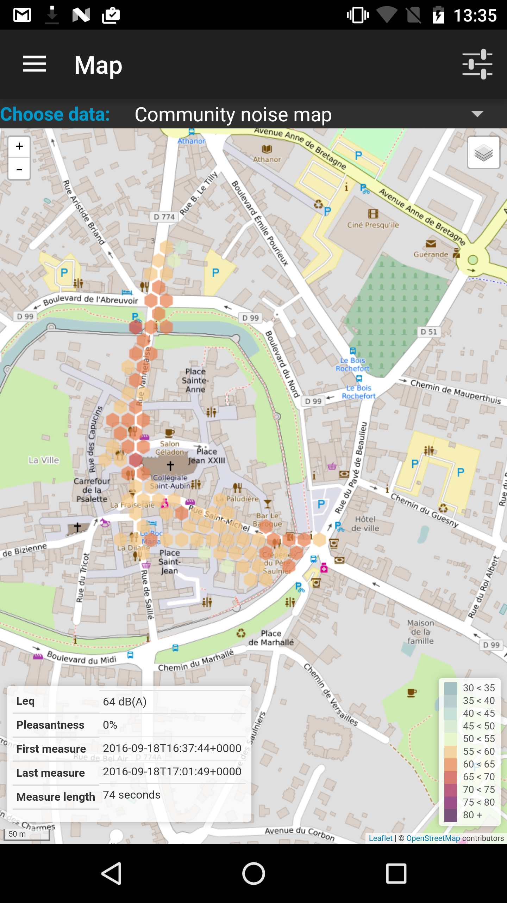
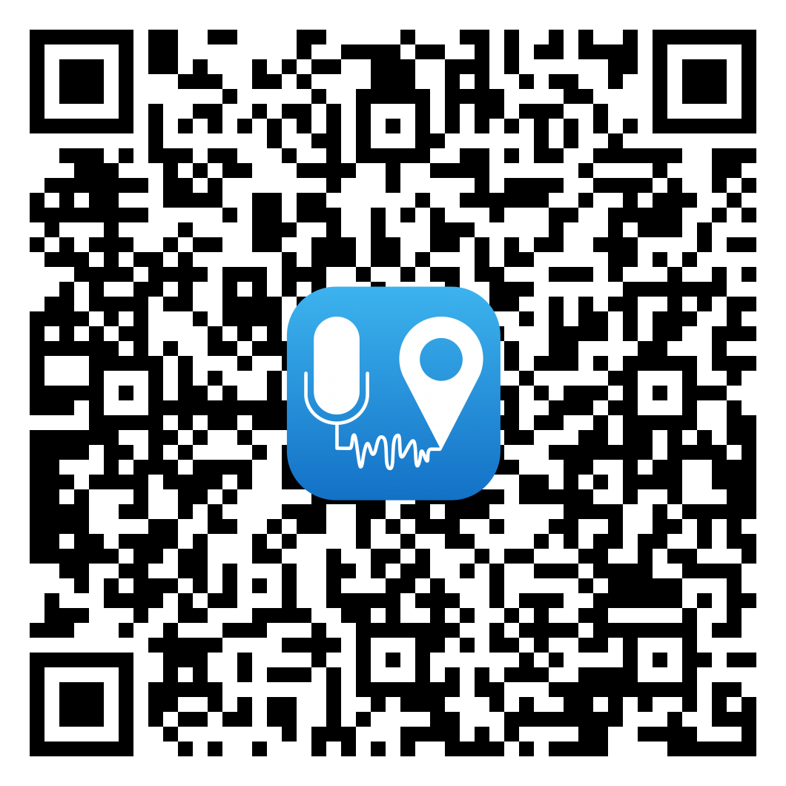

Version du 6 octobre 2016
Présentation

NoiseCapture App est une application issue d'un projet de recherche européen (ENERGIC-OD), développé conjointenent
par deux laboratoires de recherche français, le Laboratoire
d'Acoustique Environnementale de l'Ifsttar et l'équipe DECIDE du Lab-STICC du CNRS.
L'objectif du projet consiste à proposer une représentation cartographique de
l'environnement sonore, en mode participatif. A cet effet, les contributeurs disposent d'une
application sur smartphone, NoiseCapture App, leur permettant de réaliser des mesures de
bruit.
L'ensemble des mesures recueillies de manière anonyme est ensuite agrégé à l'échelle
de toute la communauté, puis traité de manière à produire des informations pertinentes, sous
forme catographique, consultables à partir d'une interface web. Le traitement est réalisé sur la
base de méthodes acoustiques, statistiques et géo-spatiales.
En quoi consiste une NoiseCapture Party
?
Une NoiseCapture Party est un évènement, localisé spatialement et sur un temps
relativement court, visant à rassembler un grand nombre de contributeurs simultanément, soit
afin de contribuer significativement à l'élaboration d'une carte de bruit «participative»
sur une ville (une rue, un quartier, un lieu…), soit pour tester de nouvelles
fonctionnalités de l'application.
Fontionnement
Utilisation de l'application :
- Télécharger l'application NoiseCapture sur Google Play (ou flasher le QR code
ci-contre
pour un accès direct)
- Lire les informations localisées dans le menu « Aide » de l'application
- Calibrer le smartphone (si cette possibilité est proposée lors de l'évênement)
- Réaliser des mesures de bruit, en suivant, le cas-échéant, les informations complémentaires
proposées par les organisateurs
Recommandations pour les mesures :
- Le smartphone ne doit pas être dans la poche
- Le smartphone doit être tenu à la main
- Le microphone du smartphone ne doit pas être masqué
- Réaliser une mesure de bruit, sans faire soi-même du bruit !
- Il est possible d'utiliser un microphone externe de meilleure qualité et calibré
Ressources